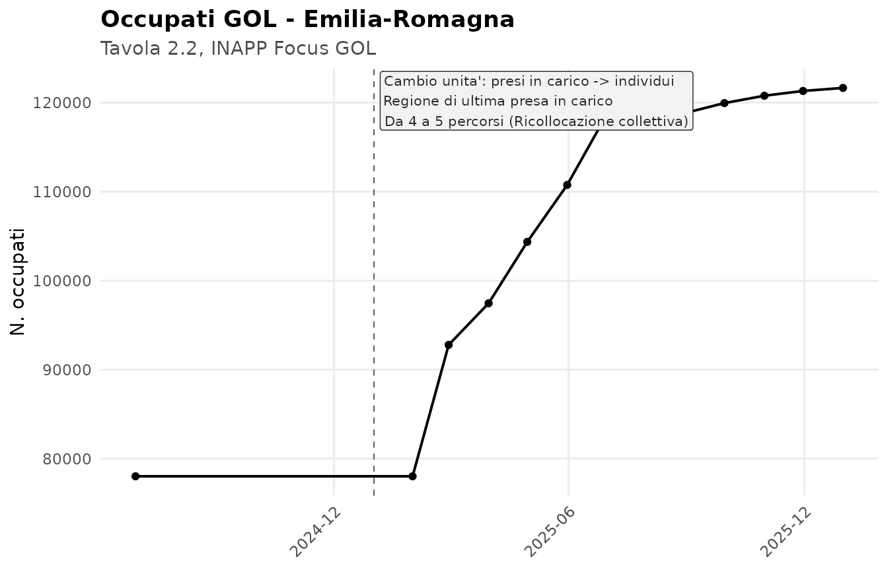
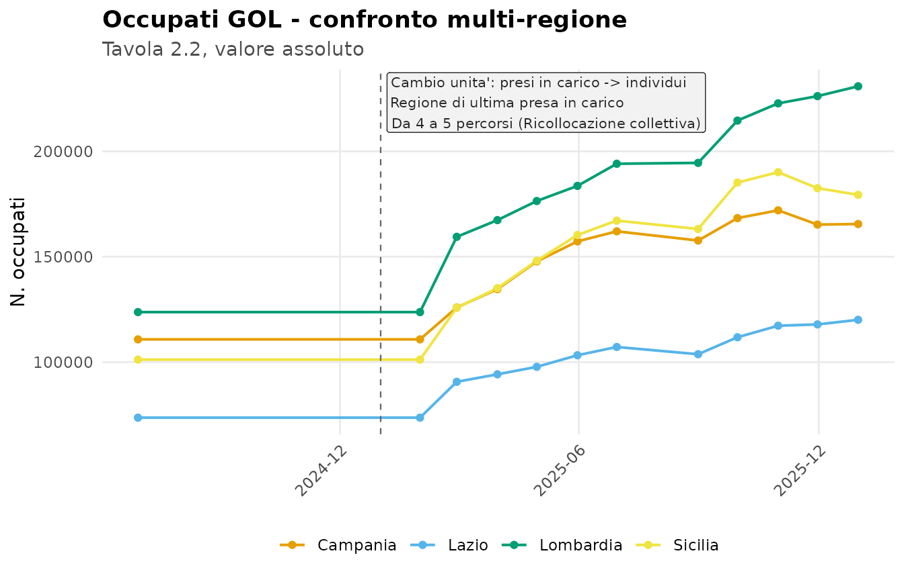
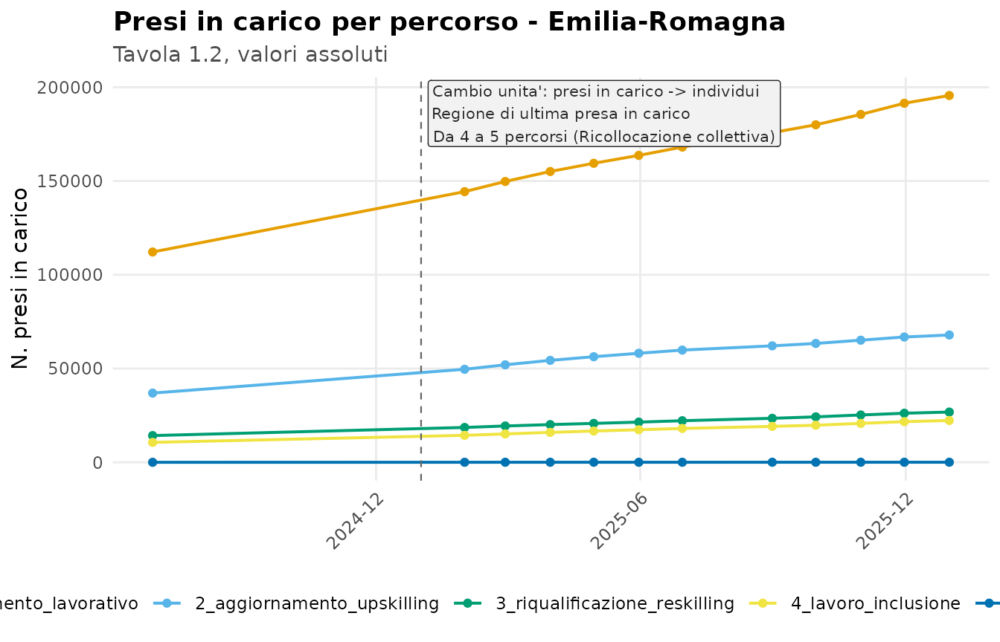
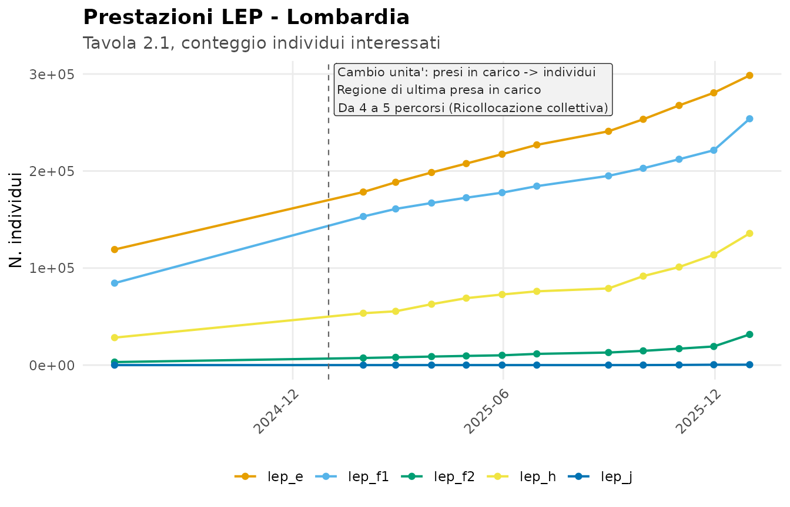
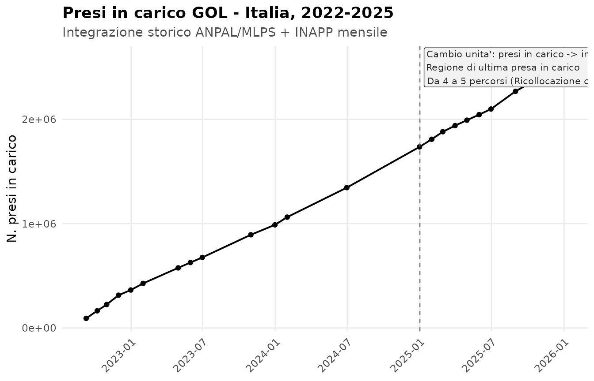
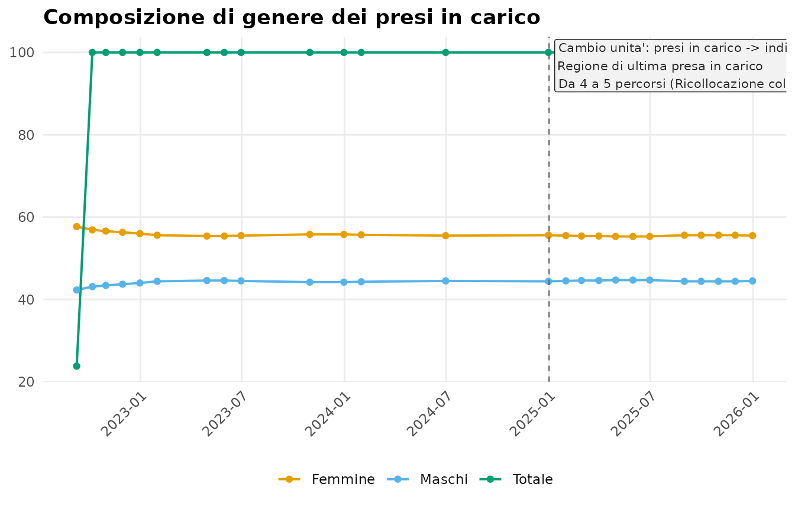
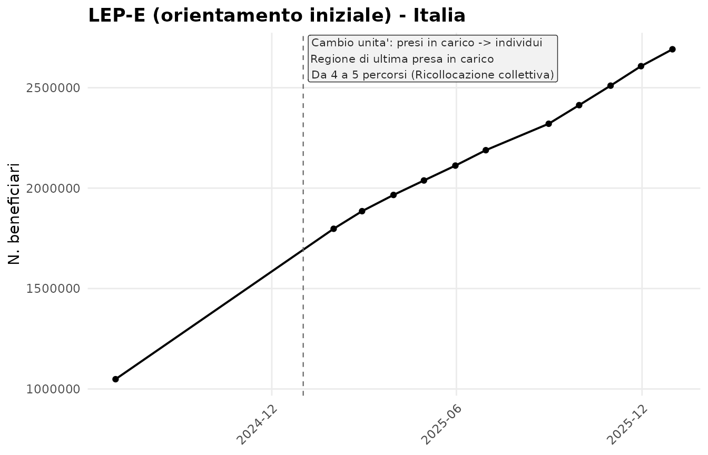
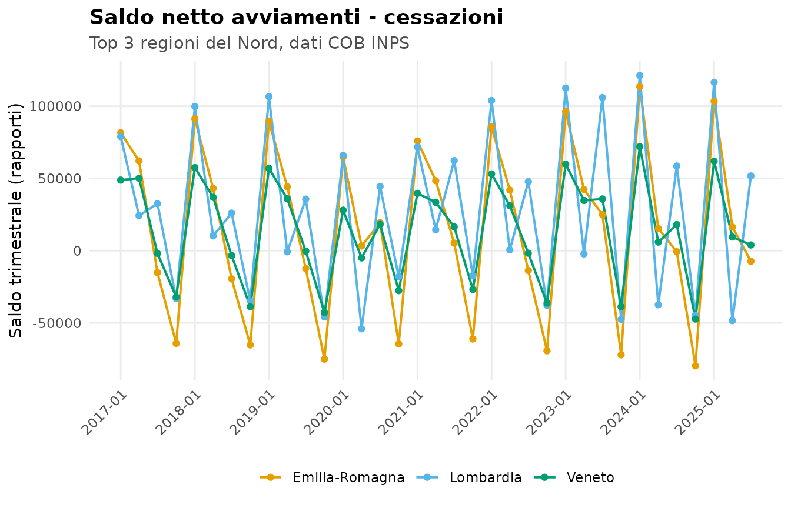
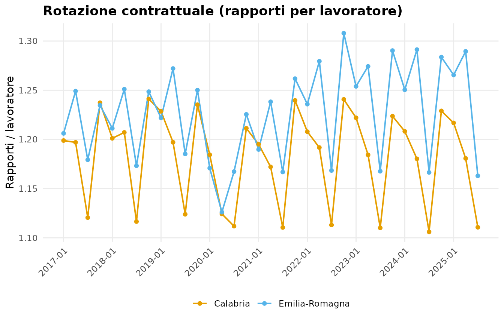

Merge tra serie GOL e baseline COB
merge-gol-cob.RmdQuesta vignette mostra un caso d’uso cross-dataset: combinare le serie INAPP del Programma GOL con i flussi del mercato del lavoro provenienti dalle Comunicazioni Obbligatorie (COB) INPS, sfruttando il fatto che entrambi i dataset usano le stesse 21 etichette regionali canoniche.
library(golDatasets)
library(data.table)
#>
#> Attaching package: 'data.table'
#> The following object is masked from 'package:base':
#>
#> %notin%1. Esiti occupazionali GOL per regione
La tavola 2.2 della serie INAPP riporta gli “occupati” tra i
raggiunti dal programma. Filtriamo i valori assoluti aggregati per
regione (percorso == "") all’ultima data disponibile.
ultima_data <- max(gol_inapp_mensile$data_riferimento)
occupati <- gol_inapp_mensile[
tavola == 2.2 &
data_riferimento == ultima_data &
dimensione == "regione" &
percorso == "" &
variabile == "occupati_totale" &
etichetta != "Totale",
.(regione = etichetta, occupati_gol = valore)
]
setorder(occupati, -occupati_gol)
head(occupati, 10)
#> regione occupati_gol
#> <char> <num>
#> 1: Lombardia 230850
#> 2: Sicilia 179361
#> 3: Campania 165501
#> 4: Puglia 146664
#> 5: Veneto 143476
#> 6: Toscana 132382
#> 7: Emilia-Romagna 121658
#> 8: Lazio 120066
#> 9: Piemonte 112057
#> 10: Sardegna 664422. Flusso COB della stessa regione, ultimo anno disponibile
Aggreghiamo i flussi del 2025 (3 trimestri disponibili) per ciascuna regione, restando sugli avviamenti.
cob_2025 <- cob_regionale_trimestrale[
flusso == "avviamenti" & anno == 2025,
.(avviamenti_2025 = sum(rapporti, na.rm = TRUE),
lavoratori_2025 = sum(lavoratori, na.rm = TRUE)),
by = regione
]
head(cob_2025, 5)
#> Key: <regione>
#> regione avviamenti_2025 lavoratori_2025
#> <char> <num> <num>
#> 1: Abruzzo 212708 177828
#> 2: Basilicata 120862 91817
#> 3: Calabria 275822 236409
#> 4: Campania 823743 628379
#> 5: Emilia-Romagna 856728 6914333. Merge sulla chiave regionale
I due dataset condividono la stessa convenzione di naming: le 21 etichette regionali canoniche. Il merge è quindi diretto.
panel <- merge(occupati, cob_2025, by = "regione", all = FALSE)
panel[, quota_gol_su_avviamenti := occupati_gol / avviamenti_2025]
setorder(panel, -quota_gol_su_avviamenti)
panel
#> regione occupati_gol avviamenti_2025 lavoratori_2025
#> <char> <num> <num> <num>
#> 1: Friuli-Venezia Giulia 52880 184203 158344
#> 2: Umbria 30844 124867 103313
#> 3: Sicilia 179361 730215 583464
#> 4: Sardegna 66442 280514 233126
#> 5: Piemonte 112057 505085 428621
#> 6: Toscana 132382 625907 512636
#> 7: Calabria 58311 275822 236409
#> 8: Campania 165501 823743 628379
#> 9: Veneto 143476 727404 625449
#> 10: Marche 47024 247312 205987
#> 11: Puglia 146664 917030 651392
#> 12: Lombardia 230850 1517151 1186585
#> 13: Abruzzo 31286 212708 177828
#> 14: Molise 5587 38607 32561
#> 15: Basilicata 17231 120862 91817
#> 16: Emilia-Romagna 121658 856728 691433
#> 17: Valle d'Aosta 3579 26492 22933
#> 18: Liguria 29223 221783 188820
#> 19: P.A. Trento 13329 134871 118923
#> 20: Lazio 120066 1422964 804587
#> 21: P.A. Bolzano 8764 158050 140296
#> regione occupati_gol avviamenti_2025 lavoratori_2025
#> <char> <num> <num> <num>
#> quota_gol_su_avviamenti
#> <num>
#> 1: 0.28707459
#> 2: 0.24701482
#> 3: 0.24562766
#> 4: 0.23685805
#> 5: 0.22185771
#> 6: 0.21150427
#> 7: 0.21140808
#> 8: 0.20091339
#> 9: 0.19724390
#> 10: 0.19014039
#> 11: 0.15993370
#> 12: 0.15216020
#> 13: 0.14708427
#> 14: 0.14471469
#> 15: 0.14256756
#> 16: 0.14200306
#> 17: 0.13509739
#> 18: 0.13176393
#> 19: 0.09882777
#> 20: 0.08437740
#> 21: 0.05545081
#> quota_gol_su_avviamenti
#> <num>4. Serie temporale per una singola regione
Concatenando le due serie possiamo costruire una visione regionale dell’andamento. Esempio per l’Emilia-Romagna.
serie_gol <- gol_inapp_mensile[
tavola == 2.2 &
etichetta == "Emilia-Romagna" &
percorso == "" &
variabile == "occupati_totale",
.(data = data_riferimento,
fonte = "GOL: occupati (INAPP)",
valore = valore)
]
serie_cob <- cob_regionale_trimestrale[
regione == "Emilia-Romagna" & flusso == "avviamenti",
.(data = data_inizio_trimestre,
fonte = "COB: avviamenti (INPS)",
valore = rapporti)
]
serie <- rbindlist(list(serie_gol, serie_cob))
setorder(serie, data, fonte)
serie[, .N, by = fonte]
#> fonte N
#> <char> <int>
#> 1: COB: avviamenti (INPS) 35
#> 2: GOL: occupati (INAPP) 125. Visualizzazione con rotture annotate
plot_timeline() produce una timeline con annotazione
automatica delle rotture di metodo. Il dataset
gol_method_ruptures espone i tre eventi documentati al
passaggio del 2025.
plot_timeline(
serie_gol,
ruptures = gol_method_ruptures,
title = "Occupati GOL - Emilia-Romagna",
subtitle = "Tavola 2.2, INAPP Focus GOL",
y_label = "N. occupati"
)
5.1 Estrazione strutturata: gol_extract_series()
Per evitare di scrivere ogni volta i filtri sulla long table,
l’helper gol_extract_series() produce una serie pronta per
plot_timeline() data la variabile (la tavola
viene inferita automaticamente).
serie_multi <- gol_extract_series(
variabile = "occupati_totale",
etichetta = c("Lombardia", "Lazio", "Campania", "Sicilia")
)
plot_timeline(
serie_multi,
group = "regione",
ruptures = gol_method_ruptures,
title = "Occupati GOL - confronto multi-regione",
subtitle = "Tavola 2.2, valore assoluto",
y_label = "N. occupati"
)
Decomposizione per percorso GOL: la tavola 1.2
codifica i 5 percorsi come colonne variabile, ricomponiamo
la serie in long con un piccolo rbindlist.
percorsi_ass <- c("1_reinserimento_lavorativo_ass",
"2_aggiornamento_upskilling_ass",
"3_riqualificazione_reskilling_ass",
"4_lavoro_inclusione_ass",
"5_ricollocazione_collettiva_ass")
serie_perc <- rbindlist(lapply(percorsi_ass, function(v) {
s <- gol_extract_series(variabile = v,
etichetta = "Emilia-Romagna",
tavola = 1.2)
s[, percorso := sub("_ass$", "", v)]
s[]
}))
plot_timeline(
serie_perc,
group = "percorso",
ruptures = gol_method_ruptures,
title = "Presi in carico per percorso - Emilia-Romagna",
subtitle = "Tavola 1.2, valori assoluti",
y_label = "N. presi in carico"
)
Confronto prestazioni LEP (tav 2.1) per una singola
regione, stesso pattern di rbindlist.
leps <- c("lep_e", "lep_f1", "lep_f2", "lep_h", "lep_j")
serie_lep <- rbindlist(lapply(leps, function(v) {
s <- gol_extract_series(variabile = v, etichetta = "Lombardia")
s[, lep := v]
s[]
}))
plot_timeline(
serie_lep,
group = "lep",
ruptures = gol_method_ruptures,
title = "Prestazioni LEP - Lombardia",
subtitle = "Tavola 2.1, conteggio individui interessati",
y_label = "N. individui"
)
5.2 Qualità delle estrazioni storiche
Il dataset gol_storico_regionale deriva dall’estrazione
automatica di 27 PDF di monitoraggio GOL. Non tutte le combinazioni
(file, tema, caption_num) hanno la stessa qualità: la
funzione gol_storico_quality() calcola metriche di
copertura e completamento e classifica ogni estrazione in 5 tier di
severità.
q <- gol_storico_quality()
q[, .N, by = severity][order(severity)]
#> severity N
#> <char> <int>
#> 1: ok 89
#> 2: rescan_low 9Le anomalie residue (tutte non ok) sono esposte come
dataset gol_rescan_recommendations. La maggior parte sono
file ANPAL 2022-2024 con 19-20 regioni invece di 21,
che si possono recuperare ri-estraendo direttamente dal PDF.
gol_rescan_recommendations[, .(file, tema, caption_num, n_anchor, severity)]
#> file tema caption_num
#> <char> <char> <char>
#> 1: 2022/Nota monitoraggio GOL 2-2022 - Focus n. 13782e9.pdf B 3
#> 2: 2022/Nota monitoraggio GOL 3-2022 Focus n. 139475c.pdf B 3
#> 3: 2022/Nota monitoraggio GOL 1-2022 - Focus N 135bdfb.pdf A1 2
#> 4: 2022/Nota monitoraggio GOL 1-2022 - Focus N 135bdfb.pdf B 3
#> 5: 2022/Nota monitoraggio GOL 2-2022 - Focus n. 13782e9.pdf A1 2
#> 6: 2022/Nota monitoraggio GOL 3-2022 Focus n. 139475c.pdf A1 2
#> 7: 2023/ANPAL_Nota_12-2023_Focus166_dati_31-10-2023.pdf F 2.1
#> 8: 2023/ANPAL_Nota_14-2023_Focus169_dati_31-12-2023.pdf F 2.1
#> 9: 2024/Nota-monitoraggio-1_2024.pdf F 2.1
#> n_anchor severity
#> <int> <char>
#> 1: 20 rescan_low
#> 2: 20 rescan_low
#> 3: 20 rescan_low
#> 4: 20 rescan_low
#> 5: 20 rescan_low
#> 6: 20 rescan_low
#> 7: 19 rescan_low
#> 8: 19 rescan_low
#> 9: 19 rescan_lowIl caso più grave (INAPP A1/1.2 — 10 file su 11 con extraction
fallita in dataset_long/) è già stato risolto in fase di
build sostituendo le righe rotte con la versione decodificata di
INAPP GOL/csv_long/tab_1_2_long.csv. La colonna
rescan_severity traccia la provenienza di ciascuna
riga.
gol_storico_regionale[, .N, by = rescan_severity]
#> rescan_severity N
#> <char> <int>
#> 1: ok 18861
#> 2: rescan_low 1369
#> 3: replaced_from_inapp_csv_long 24205.3 Storia lunga 2022-2025
I tre dataset gol_storia_volumi,
gol_storia_caratteristiche, gol_storia_esiti
integrano lo storico ANPAL/MLPS (cadenza episodica/semestrale) con la
serie mensile INAPP, producendo una visione completa del Programma GOL
dal 2022 alla fine del 2025. Le rotture metodologiche del 2025 sono
annotate via gol_method_ruptures.
serie_pic <- gol_storia_volumi_series(
variabile = "presi_in_carico_totale",
regione = "Totale"
)
plot_timeline(
serie_pic,
ruptures = gol_method_ruptures,
title = "Presi in carico GOL - Italia, 2022-2025",
subtitle = "Integrazione storico ANPAL/MLPS + INAPP mensile",
y_label = "N. presi in carico"
)
Composizione di genere (storica dal 2022, valori percentuali ANPAL):
serie_genere <- gol_storia_caratteristiche_series(
caratteristica = "genere",
regione = "Totale"
)
plot_timeline(
serie_genere,
group = "modalita",
ruptures = gol_method_ruptures,
title = "Composizione di genere dei presi in carico"
)
LEP-E (orientamento iniziale, INAPP mensile):
serie_lep <- gol_storia_esiti_series(variabile = "lep_e",
regione = "Totale")
plot_timeline(
serie_lep,
ruptures = gol_method_ruptures,
title = "LEP-E (orientamento iniziale) - Italia",
y_label = "N. beneficiari"
)
I tre dataset propagano la colonna confidenza che
permette di filtrare via min_confidenza = "high" per
analisi rigorose, escludendo le righe le cui semantiche derivano da
inferenza euristica sul header_above.
5.4 Plot COB
Per le serie COB (che non hanno rotture metodologiche note) il
parametro ruptures rimane NULL e si usa una
palette CVD-safe (Okabe-Ito) per il confronto multi-regione.
ind <- cob_compute_indicators()
serie_saldi <- ind[
regione %in% c("Emilia-Romagna", "Lombardia", "Veneto"),
.(data = data_inizio_trimestre,
valore = saldo_rapporti,
regione)
]
plot_timeline(
serie_saldi,
group = "regione",
title = "Saldo netto avviamenti - cessazioni",
subtitle = "Top 3 regioni del Nord, dati COB INPS",
y_label = "Saldo trimestrale (rapporti)",
date_breaks = "1 year"
)
6. Indicatori derivati COB
cob_compute_indicators() produce un wide-table con i
flussi e gli indicatori derivati piu’ usati per l’analisi del mercato
del lavoro regionale.
ind <- cob_compute_indicators()
str(ind[1])
#> Classes 'data.table' and 'data.frame': 1 obs. of 15 variables:
#> $ regione : chr "Abruzzo"
#> $ anno : int 2017
#> $ trimestre : int 1
#> $ data_inizio_trimestre: IDate, format: "2017-01-01"
#> $ avviamenti_rapporti : num 48519
#> $ cessazioni_rapporti : num 34400
#> $ avviamenti_lavoratori: num 40644
#> $ cessazioni_lavoratori: num 27914
#> $ rotation_avviamenti : num 1.19
#> $ rotation_cessazioni : num 1.23
#> $ saldo_rapporti : num 14119
#> $ saldo_lavoratori : num 12730
#> $ yoy_avviamenti : num NA
#> $ yoy_cessazioni : num NA
#> $ yoy_saldo : num NA
#> - attr(*, ".internal.selfref")=<pointer: 0x55fc659ef010>
#> - attr(*, "sorted")= chr [1:3] "regione" "anno" "trimestre"Estrazione tipica: indice di rotazione
(rapporti / lavoratori) per gli avviamenti.
plot_timeline(
ind[regione %in% c("Emilia-Romagna", "Calabria"),
.(data = data_inizio_trimestre, valore = rotation_avviamenti, regione)],
group = "regione",
title = "Rotazione contrattuale (rapporti per lavoratore)",
y_label = "Rapporti / lavoratore",
date_breaks = "1 year"
)
7. Rotture di serie da tenere a mente
Prima di costruire indicatori longitudinali, è importante ricordare
le rotture di serie documentate in
dataset_long/README.md:
- Cambio unità di osservazione nel 2025 (presi in carico → individui).
- Cambio regola di assegnazione regionale nel 2025 (regione di presa in carico → regione di ultima presa in carico).
-
Passaggio da 4 a 5 percorsi GOL con
ricollocazione_collettivaintrodotto nel 2025.
Lo storico più lungo è disponibile in
gol_storico_regionale, ma per i quattro temi A1, B, F, H il
col_index non è confrontabile direttamente pre/post
2025.
8. Convenzione regioni
Le 21 etichette canoniche usate da tutti e tre i dataset:
sort(unique(cob_regionale_trimestrale$regione))
#> [1] "Abruzzo" "Basilicata" "Calabria"
#> [4] "Campania" "Emilia-Romagna" "Friuli-Venezia Giulia"
#> [7] "Lazio" "Liguria" "Lombardia"
#> [10] "Marche" "Molise" "P.A. Bolzano"
#> [13] "P.A. Trento" "Piemonte" "Puglia"
#> [16] "Sardegna" "Sicilia" "Toscana"
#> [19] "Umbria" "Valle d'Aosta" "Veneto"